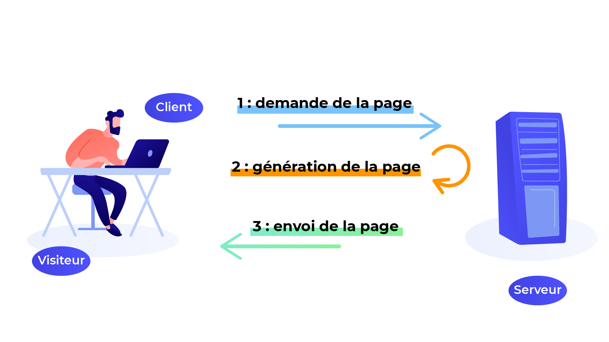
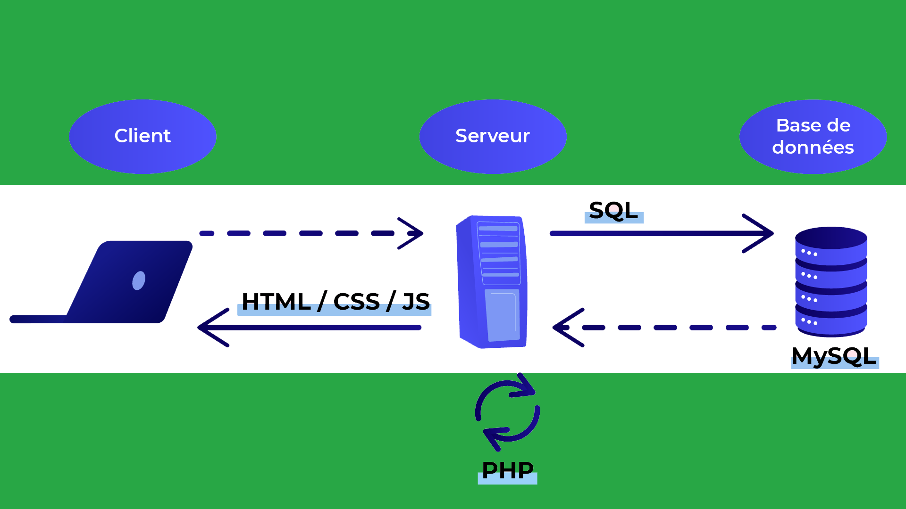

Pour construire un site web, on a recours à des langages. Ils servent en quelque sorte à établir les plans d’architecte dont on a besoin pour construire les sites. Ces langages sont principalement :
Tous ces langages sont désormais indispensables à la réalisation de tous les sites web. On dit que ce sont des langages client ou encore des langages frontend , car ils sont lus par les machines des clients.
Pour accéder aux sites web, on a besoin de navigateurs web. Il existe notamment :
Le rôle des navigateurs est de traduire les langages HTML, CSS et JavaScript sous la forme de sites web utilisables par tout le monde.
Les langages HTML et CSS sont traduits sous la forme de sites web.
À quoi ressemble à un code HTML ? Voici un exemple :
Avec un peu d’entraînement, vous pouvez apprendre à le lire et même à l’écrire, si si ! Rien que dans ce code, je vois des paragraphes, des titres, des informations d’en-tête, etc. 🤓
En plus des langages client que nous venons d’évoquer (HTML, CSS et JavaScript), il y a une quantité importante de langages serveur.
Les langages serveur sont, comme leur nom l’indique, gérés par les serveurs. Les clients n’y touchent pas. Leur rôle est un peu différent :
Les langages serveur sont nombreux. En voici quelques exemples :
On trouve tous ces langages parmi les sites web les plus connus. On trouve par exemple du PHP chez Simplon, Facebook et OpenClassrooms, du Java sur le site de votre banque, du Python et du Java chez Google, etc.
En plus de ces langages, on a inventé des frameworks pour faciliter la création de sites web dans ces langages.
Les frameworks sont des boîtes à outils qui se révèlent de plus en plus indispensables aujourd’hui. De la même façon que l’on n’envisage plus de creuser un trou "à la main" (on préfère utiliser une pelleteuse !), on n’envisage plus trop de construire un site web à la main. On se fait aider un peu par un framework !
Les frameworks se rapportent à des langages. On peut citer :
Le rôle d’un langage serveur est de générer une page web. On peut résumer l’interaction entre le client et le serveur comme ceci :
Vous l’aurez compris : toute la partie apparente du site est codée avec les langages client, comme html, alors que tout ce qui décrit le comportement du site relève du langage serveur.
Tous les sites web ont besoin d’enregistrer des informations, comme la liste de leurs utilisateurs, des messages qui ont été échangés, etc. C’est là qu’une base de données intervient : c’est un logiciel dédié au stockage de données.
Parmi les logiciels de base de données les plus célèbres, on peut citer :
C’est généralement le serveur qui communique avec la base de données, par le biais du langage serveur. Résumons dans un schéma pour tenter d’y voir plus clair :
La base de données est aussi stockée sur un serveur (généralement un serveur différent).
On parle souvent de Cloud... qu’est-ce que cela signifie concrètement ? Ce n’est pas évident, car c’est un terme (très) utilisé en marketing. Il y aurait plusieurs définitions possibles !
Pour faire simple, on peut commencer par se dire que ce sont ces fameux services fournis via une interface web dont je vous parlais juste à l’instant. En clair, on pourrait dire que Gmail est un service d’e-mail sur le Cloud.
Le Web sert alors de passerelle à de nombreux services, sous la dénomination "cloud".
Dans la réalité, c’est un peu plus compliqué que cela : il y a plusieurs types de clouds. On parle de SaaS (Software as a Service) pour désigner le cas le plus courant pour le grand public, à savoir un logiciel que l’on utilise à travers une interface web.
Nous avons beaucoup parlé jusqu’ici de sites web que l’on affiche sur un ordinateur. Or, aujourd’hui, les mobiles (smartphones, tablettes) sont très courants. Comment faire pour communiquer avec eux ?/p>
Vous avez 2 solutions. Vous pouvez faire :
L’application native est utile uniquement si l'on un projet spécifique aux smartphones, qui est suffisamment complexe (un jeu, par exemple). En revanche, s’il s’agit juste de consulter des pages avec des informations simples, il n’est peut-être pas nécessaire de développer une application mobile.